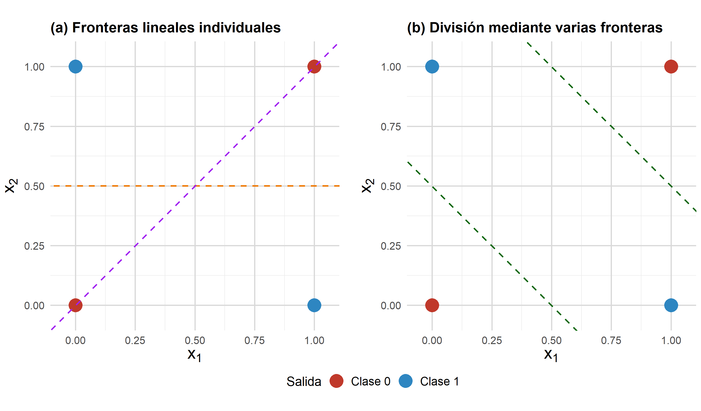
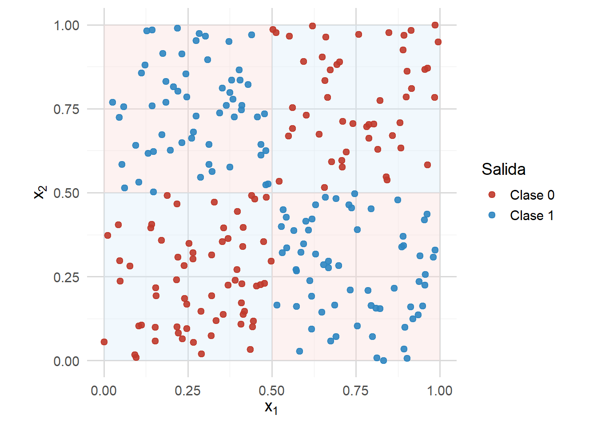
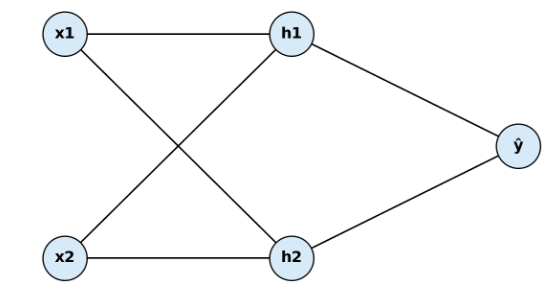
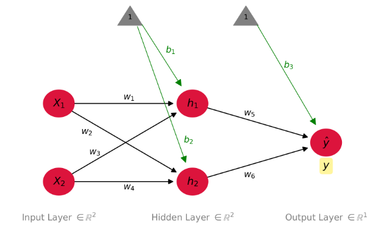
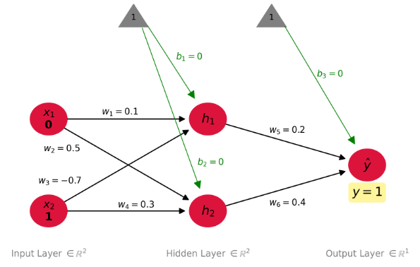
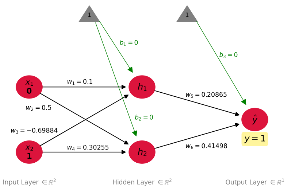
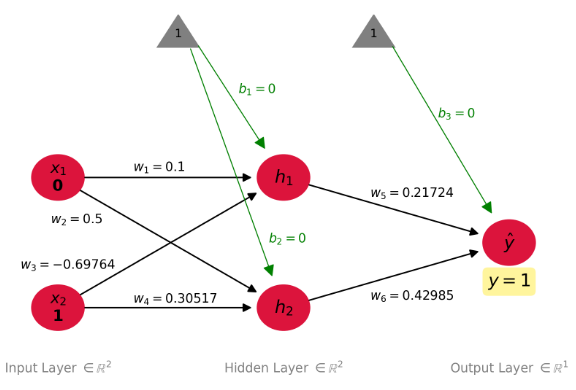

library(ggplot2)
library(patchwork)
library(knitr)
library(kableExtra)REDES NEURONALES ARTIFICIALES
La función XOR: arquitectura 2-2-1 y retropropagación

Estas notas explican el problema XOR, su interpretación geométrica, una red neuronal 2-2-1 y dos épocas de entrenamiento manual mediante propagación hacia adelante y retropropagación, con ejemplos y actividades de aprendizaje.
1 Paquetes utilizados
2 El problema XOR
Antes de introducir las medidas de error, consideramos un problema clásico de referencia en redes neuronales: la disyunción exclusiva (XOR).
La función XOR se define así: La salida es 1 cuando las entradas son diferentes y 0 en caso contrario.
| $$x_1$$ | $$x_2$$ | $$y$$ | Interpretación |
|---|---|---|---|
| 0 | 0 | 0 | Entradas iguales → 0 |
| 0 | 1 | 1 | Entradas diferentes → 1 |
| 1 | 0 | 1 | Entradas diferentes → 1 |
| 1 | 1 | 0 | Entradas iguales → 0 |
2.0.1 ¿Por qué es importante XOR?
El problema XOR es fundamental porque:
No es linealmente separable.
Una red de una sola capa, sin capa oculta, no puede resolverlo.
Requiere al menos una capa oculta en una red neuronal convencional de este tipo.
Por eso, XOR es un ejemplo mínimo para ilustrar cómo las redes neuronales aprenden patrones no lineales.
2.0.2 Intuición geométrica
Las siguientes figuras ilustran el conjunto de datos XOR en \(\mathbb{R}^2\). Los puntos de clases distintas no pueden separarse mediante una única recta.
Primero presentamos las cuatro observaciones canónicas del conjunto XOR.
library(ggplot2)
library(patchwork)
xor_simple <- data.frame(
x1 = c(0, 0, 1, 1),
x2 = c(0, 1, 0, 1),
y = factor(c(0, 1, 1, 0))
)
base_theme <- theme_minimal(base_size = 20) +
theme(
panel.grid.minor = element_line(color = "gray92"),
panel.grid.major = element_line(color = "gray85"),
# Ejes
axis.title = element_text(size = 26), # Títulos
axis.text = element_text(size = 16), # Números
# Titles (a), (b)
plot.title = element_text(size = 22, face = "bold", hjust = 0),
# Legends
legend.title = element_text(size = 20),
legend.text = element_text(size = 18),
# Espaciados
plot.margin = margin(2, 2, 2, 2),
legend.margin = margin(0, 0, 0, 0),
legend.box.margin = margin(0, 0, 0, 0)
)
# Plot (a)
p1 <- ggplot(xor_simple, aes(x = x1, y = x2, color = y)) +
geom_point(size = 9) +
geom_abline(intercept = 0.5, slope = 0,
linetype = "dashed", color = "darkorange2", linewidth = 1.1) +
geom_abline(intercept = 0, slope = 1,
linetype = "dashed", color = "purple", linewidth = 1.1) +
scale_color_manual(
values = c("0" = "#C0392B", "1" = "#2E86C1"),
labels = c("Clase 0", "Clase 1")
) +
scale_x_continuous(breaks = seq(0, 1, by = 0.25), limits = c(-0.05, 1.05)) +
scale_y_continuous(breaks = seq(0, 1, by = 0.25), limits = c(-0.05, 1.05)) +
coord_fixed() +
labs(
title = "(a) Fronteras lineales individuales",
x = expression(x[1]),
y = expression(x[2]),
color = "Salida"
) +
base_theme +
theme(plot.margin = margin(2, 17, 2, 2)) # Más espacio (right): margin(top, right, bottom, left)
# Gráfico (b)
p2 <- ggplot(xor_simple, aes(x = x1, y = x2, color = y)) +
geom_point(size = 9) +
geom_abline(intercept = 0.5, slope = -1,
linetype = "dashed", color = "darkgreen", linewidth = 1.1) +
geom_abline(intercept = 1.5, slope = -1,
linetype = "dashed", color = "darkgreen", linewidth = 1.1) +
scale_color_manual(
values = c("0" = "#C0392B", "1" = "#2E86C1"),
labels = c("Clase 0", "Clase 1")
) +
scale_x_continuous(breaks = seq(0, 1, by = 0.25), limits = c(-0.05, 1.05)) +
scale_y_continuous(breaks = seq(0, 1, by = 0.25), limits = c(-0.05, 1.05)) +
coord_fixed() +
labs(
title = "(b) División mediante varias fronteras",
x = expression(x[1]),
y = expression(x[2]),
color = "Salida"
) +
base_theme +
theme(plot.margin = margin(2, 2, 2, 17)) # Más espacio (left): margin(top, right, bottom, left)
# Combinación final
(p1 + p2) +
plot_layout(guides = "collect") &
# Leyendas
theme(
legend.position = "bottom",
legend.direction = "horizontal",
legend.title = element_text(size = 20),
legend.text = element_text(size = 18)
)
En la Figura 1 observamos dos situaciones:
Panel (a). Las líneas discontinuas representan ejemplos de fronteras de decisión lineales individuales.
Cada recta divide el espacio de entrada en dos semiplanos, pero ninguna separa correctamente las clases.
En ambos casos quedan puntos de clases diferentes del mismo lado de la frontera.
Esto ilustra por qué un clasificador lineal único no puede resolver XOR.
Panel (b). Las líneas discontinuas no representan un único clasificador lineal, sino varias fronteras que dividen el espacio de entrada en regiones. Esto anticipa el papel de las neuronas ocultas en una red multicapa:
- Cada neurona oculta puede definir una frontera lineal, y la combinación de sus efectos puede producir una regla de decisión no lineal.
Para reforzar esta intuición, la Figura 2 muestra el patrón XOR con una mayor densidad de puntos.
Los puntos adicionales no representan nuevos casos lógicos: se muestrean del cuadrado unitario y se etiquetan con la misma regla XOR para visualizar mejor la estructura espacial.
Las regiones sombreadas son únicamente una guía visual:
Las regiones rosadas corresponden a la clase 0.
Las regiones azul claro corresponden a la clase 1.
library(ggplot2)
set.seed(123)
n <- 240
x1 <- runif(n)
x2 <- runif(n)
y <- ifelse((x1 <= 0.5 & x2 > 0.5) | (x1 > 0.5 & x2 <= 0.5), 1, 0)
xor_dense <- data.frame(
x1 = x1,
x2 = x2,
y = factor(y)
)
ggplot(xor_dense, aes(x = x1, y = x2, color = y)) +
annotate("rect", xmin = 0.00, xmax = 0.50, ymin = 0.50, ymax = 1.00,
fill = "#FADBD8", alpha = 0.35, color = NA) +
annotate("rect", xmin = 0.50, xmax = 1.00, ymin = 0.00, ymax = 0.50,
fill = "#FADBD8", alpha = 0.35, color = NA) +
annotate("rect", xmin = 0.00, xmax = 0.50, ymin = 0.00, ymax = 0.50,
fill = "#D6EAF8", alpha = 0.35, color = NA) +
annotate("rect", xmin = 0.50, xmax = 1.00, ymin = 0.50, ymax = 1.00,
fill = "#D6EAF8", alpha = 0.35, color = NA) +
geom_point(size = 2.2, alpha = 0.9) +
scale_color_manual(
values = c("0" = "#C0392B", "1" = "#2E86C1"),
labels = c("Clase 0", "Clase 1")
) +
scale_x_continuous(breaks = seq(0, 1, by = 0.25), limits = c(0, 1)) +
scale_y_continuous(breaks = seq(0, 1, by = 0.25), limits = c(0, 1)) +
coord_fixed() +
labs(
x = expression(x[1]),
y = expression(x[2]),
color = "Salida"
) +
theme_minimal(base_size = 14) +
theme(
legend.position = "right",
panel.grid.minor = element_line(color = "gray93"),
panel.grid.major = element_line(color = "gray85")
)
En conjunto, las figuras aclaran la estructura XOR. Los puntos \((0,0)\) y \((1,1)\) pertenecen a la clase 0; los puntos \((0,1)\) y \((1,0)\), a la clase 1. Como las clases ocupan posiciones diagonales alternadas, ninguna frontera única de la forma
\[ w_1 x_1 + w_2 x_2 + b = 0 \]
puede separarlas.
Esto confirma que XOR no es linealmente separable y explica por qué su solución requiere combinar varias fronteras lineales mediante transformaciones no lineales.
Interpretación geométrica
El conjunto XOR presenta una estructura de clases alternadas en diagonal. Como no puede separarse mediante una sola recta, un modelo lineal es insuficiente. Esta limitación motiva el uso de capas ocultas y funciones de activación no lineales.
2.0.3 Arquitectura de red neuronal para XOR
Para superar la falta de separabilidad lineal observada antes (véase la Figura 1), introducimos una red neuronal con una capa oculta. Esta capa permite transformar las entradas y construir representaciones no lineales.
Para resolver XOR, consideramos una arquitectura de propagación hacia adelante compuesta por:
\(n_0=2\) neuronas de entrada.
Una capa oculta (por ejemplo, \(n_1=2\) neuronas).
\(n_N=1\) neurona de salida.
Por tanto: \[ \mathbf{x} \in \mathbb{R}^2, \quad \hat{y} \in \mathbb{R}, \quad y \in \mathbb{R} \]
La Figura 3 ilustra esta arquitectura. Las entradas \((x_1,x_2)\) se transforman primero en una representación oculta mediante dos neuronas intermedias \((h_1,h_2)\).

Estas representaciones intermedias se combinan en la neurona de salida \(\hat{y}\) para obtener la predicción final. La idea central consiste en combinar transformaciones lineales y activaciones no lineales.
Esta estructura será fundamental en las secciones siguientes, donde calcularemos las transformaciones y mostraremos cómo la red aprende a partir de los datos.
2.0.4 Medidas de error utilizadas en el ejemplo XOR
En el ejemplo de entrenamiento manual, con una sola observación XOR, seguimos diferentes cantidades para comprender cómo aprende la red.
Nos centraremos en el caso escalar para simplificar la exposición. Estas cantidades cumplen funciones diferentes:
Algunas facilitan la interpretación.
Otras son necesarias para la optimización.
Consideraremos las siguientes:
- Error absoluto (interpretación).
\[ |\hat{y} - y| \]
Esta cantidad mide de forma directa la magnitud del error de predicción. Es útil para supervisar el desempeño, aunque no suele emplearse como función objetivo por su falta de diferenciabilidad en cero.
- Error cuadrático (función de pérdida para una observación).
\[ \text{costo} = \frac{1}{2}(\hat{y} - y)^2 \]
Esta es la función de pérdida que se minimiza durante el entrenamiento de una sola observación.
- Derivada de la pérdida con respecto a la predicción.
\[ \frac{\partial \, \text{costo}}{\partial \hat{y}} = \hat{y} - y \]
Esta cantidad indica cómo cambia la pérdida al variar la predicción.
Para actualizar los parámetros necesitamos la derivada de la pérdida con respecto a cada parámetro \(w\). Se obtiene combinando:
La derivada de la pérdida respecto a la predicción (por ejemplo, \(\hat{y}-y\) para el error cuadrático), y
La derivada de la predicción respecto al parámetro, \(\frac{\partial\hat{y}}{\partial w}\).
Juntos, estos términos determinan cómo se propaga hacia atrás la señal de error en la red.
Más adelante explicaremos detalladamente este proceso, denominado retropropagación (backpropagation).
2.0.5 Diferencia entre la derivada de la pérdida y la de la predicción
La derivada de la pérdida no es igual a la derivada de la predicción.
La primera describe cómo varía la pérdida respecto a la predicción; la segunda describe cómo cambia la predicción respecto a los parámetros del modelo, mediante derivadas como
\[ \frac{\partial \hat{y}}{\partial w} \]
que miden la variación de la salida de la red respecto a sus parámetros.
- Ambas se combinan mediante la regla de la cadena durante la retropropagación.
2.0.6 Idea fundamental
El error absoluto nos ayuda a interpretar la predicción.
La función de pérdida define qué optimizamos.
El gradiente determina cómo actualizamos el modelo.
Estos conceptos conducen a estudiar cómo se controlan las actualizaciones de los parámetros durante el entrenamiento.
3 Ejemplo: propagación hacia adelante manual para una observación XOR
La sección anterior presentó el problema XOR, su interpretación geométrica y la necesidad de una capa oculta. Ahora pasamos de la visión conceptual a un cálculo numérico del entrenamiento.
En este primer ejemplo utilizamos una sola observación de entrenamiento de la tabla XOR:
\[ x_1 = 0, \qquad x_2 = 1, \qquad y = 1. \]
El objetivo es calcular manualmente cómo esta observación se propaga por una pequeña red neuronal antes de aplicar retropropagación. Esto es importante porque el cálculo hacia atrás depende de los valores de activación obtenidos hacia adelante.
3.0.1 El modelo
En este ejemplo consideramos una red con dos entradas, dos neuronas en una capa oculta y una salida. Se utiliza la función logística como activación.
La Figura 4 muestra la estructura. Las entradas \((x_1,x_2)\) se transforman en las activaciones ocultas \((h_1,h_2)\), que a su vez determinan la salida \(\hat{y}\).

Aplicaremos la retropropagación para ajustar pesos y sesgos, de modo que la red aprenda la correspondencia entre las entradas y la salida correcta de XOR. Primero necesitamos calcular su predicción inicial.
Para ello hacemos una propagación hacia adelante: calculamos la entrada neta de cada neurona oculta, aplicamos la función logística y finalmente obtenemos la predicción de la neurona de salida.
3.0.2 Valores iniciales
La Figura 5 presenta los pesos, sesgos y valores de entrenamiento iniciales. Estos determinan el punto de partida de la primera propagación.
Matemáticamente, el vector de entrada y el valor objetivo son:
\[ \mathbf{x} = \begin{pmatrix} x_1 \\ x_2 \end{pmatrix} = \begin{pmatrix} 0 \\ 1 \end{pmatrix}, \qquad y = 1. \]
Los parámetros iniciales de la red son:
\[ \mathbf{W}^{(0,1)} = \begin{pmatrix} w_1 & w_3 \\ w_2 & w_4 \end{pmatrix} = \begin{pmatrix} 0.1 & -0.7 \\ 0.5 & 0.3 \end{pmatrix}, \qquad \mathbf{b}^{(1)} = \begin{pmatrix} b_1 \\ b_2 \end{pmatrix} = \begin{pmatrix} 0 \\ 0 \end{pmatrix}, \]
\[ \mathbf{W}^{(1,2)} = \begin{pmatrix} w_5 \\ w_6 \end{pmatrix} = \begin{pmatrix} 0.2 \\ 0.4 \end{pmatrix}, \qquad b^{(2)} = b_3 = 0. \]

Como muestra la figura, utilizamos una única observación de entrenamiento. Para las entradas
\[ x_1 = 0, \qquad x_2 = 1, \]
la salida objetivo es
\[ y = 1. \]
Por tanto, la primera propagación hacia adelante busca calcular la predicción inicial \(\hat{y}\) de la red antes de actualizar los parámetros.
3.0.3 Primera época: propagación hacia adelante
Comenzamos propagando los valores de entrada a través de la red.
Neurona oculta \(h_1\)
Entrada neta.
\[ z_1 = w_1 x_1 + w_3 x_2 + b_1 = (0.1)(0) + (-0.7)(1) + 0 = -0.7. \]
Salida de activación.
\[ h_1 = f(z_1) = \frac{1}{1+e^{-z_1}} = \frac{1}{1+e^{0.7}} = 0.3318. \]
Neurona oculta \(h_2\)
Entrada neta.
\[ z_2 = w_2 x_1 + w_4 x_2 + b_2 = (0.5)(0) + (0.3)(1) + 0 = 0.3. \]
Salida de activación.
\[ h_2 = f(z_2) = \frac{1}{1+e^{-z_2}} = \frac{1}{1+e^{-0.3}} = 0.5744. \]
Neurona de salida \(\hat{y}\)
Entrada neta.
\[ z_3 = w_5 h_1 + w_6 h_2 + b_3 = (0.2)(0.3318) + (0.4)(0.5744) + 0 = 0.2961. \]
Salida de activación.
\[ \hat{y} = f(z_3) = \frac{1}{1+e^{-z_3}} = \frac{1}{1+e^{-0.2961}} = 0.5735. \]
Por tanto, antes de actualizar los parámetros, la red predice aproximadamente
\[ \hat{y} = 0.5735, \]
mientras que el valor objetivo es
\[ y = 1. \]
Error total
Para esta observación, la pérdida por error cuadrático se calcula como
\[ E = \frac{1}{2}(y-\hat{y})^2. \]
Sustituyendo el valor objetivo y la predicción se obtiene
\[ E = \frac{1}{2}(1-0.5735)^2 = 0.09095. \]
Este valor cuantifica cuánto se aleja la predicción actual de la salida XOR deseada para \((x_1,x_2)=(0,1)\).
3.0.4 Primera época: retropropagación
El siguiente paso es actualizar pesos y sesgos para acercar \(\hat{y}\) al objetivo \(y=1\). La retropropagación permite calcular eficientemente la contribución de cada parámetro al error total.
Aplicamos la regla de la cadena para propagar el error desde la salida hacia la capa oculta y obtener los gradientes necesarios.
Capa de salida
Comenzamos con los pesos \(w_5\) y \(w_6\), que conectan la capa oculta con la neurona de salida.
- Sensibilidad del error respecto al peso \(w_5\).
Por ejemplo, para \(w_5\) queremos determinar cómo afecta al error total una pequeña variación de ese peso. Necesitamos calcular
\[ \frac{\partial E}{\partial w_5}. \]
Aplicando la regla de la cadena,
\[ \begin{aligned} \frac{\partial E}{\partial z_3} &= \frac{\partial E}{\partial \hat{y}} \cdot \frac{\partial \hat{y}}{\partial z_3} \\[4pt] &= (\hat{y}-y)\,\hat{y}(1-\hat{y}) \\[4pt] &= (0.5735-1)(0.5735)(1-0.5735) \\[4pt] &= -0.10432. \end{aligned} \]
Por tanto,
\[ \begin{aligned} \frac{\partial E}{\partial w_5} &= \frac{\partial E}{\partial z_3} \cdot \frac{\partial z_3}{\partial w_5} \\[4pt] &= (-0.10432)h_1 \\[4pt] &= (-0.10432)(0.3318) \\[4pt] &= -0.03462. \end{aligned} \]
- Sensibilidad del error respecto al peso \(w_6\).
De manera análoga, para \(w_6\),
\[ \begin{aligned} \frac{\partial E}{\partial w_6} &= \frac{\partial E}{\partial z_3} \cdot \frac{\partial z_3}{\partial w_6} \\[4pt] &= (-0.10432)h_2 \\[4pt] &= (-0.10432)(0.5744) \\[4pt] &= -0.05993. \end{aligned} \]
- Actualización de \(w_5\) y \(w_6\) mediante descenso del gradiente.
Utilizando la regla de actualización por descenso del gradiente,
\[ w_i^{new} \;=\; w_i \;-\; \alpha\, \frac{\partial E}{\partial w_i}, \]
con tasa de aprendizaje \(\alpha=0.25\), obtenemos
\[ \begin{aligned} w_5^{new} &= 0.2 - (0.25)(-0.03462) = 0.20865, \\[4pt] w_6^{new} &= 0.4 - (0.25)(-0.05993) = 0.41498. \end{aligned} \]
Así, ambos pesos de la capa de salida aumentan, porque la predicción \(\hat{y}=0.5735\) está por debajo del objetivo \(y=1\).
Capa oculta
Continuamos la retropropagación calculando los gradientes de los pesos que conectan las entradas con las neuronas ocultas: \(w_1\), \(w_2\), \(w_3\) y \(w_4\).
- Neurona oculta \(h_1\):
Aplicando la regla de la cadena,
\[ \begin{aligned} \frac{\partial E}{\partial z_1} &= \frac{\partial E}{\partial z_3} \cdot \frac{\partial z_3}{\partial h_1} \cdot \frac{\partial h_1}{\partial z_1} \\[4pt] &= (-0.10432)(0.2)(1-0.3318)(0.3318) \\[4pt] &= -0.00463. \end{aligned} \]
Por tanto,
\[ \begin{aligned} \frac{\partial E}{\partial w_1} &= \frac{\partial E}{\partial z_1} \cdot \frac{\partial z_1}{\partial w_1} = (-0.00463)(0) = 0, \\[4pt] \frac{\partial E}{\partial w_3} &= \frac{\partial E}{\partial z_1} \cdot \frac{\partial z_1}{\partial w_3} = (-0.00463)(1) = -0.00463. \end{aligned} \]
Aplicando la regla de actualización con \(\alpha=0.25\),
\[ \begin{aligned} w_1^{new} &= 0.1 - (0.25)(0) = 0.1, \\[4pt] w_3^{new} &= -0.7 - (0.25)(-0.00463) = -0.69884. \end{aligned} \]
- Neurona oculta \(h_2\):
De manera análoga,
\[ \begin{aligned} \frac{\partial E}{\partial z_2} &= \frac{\partial E}{\partial z_3} \cdot \frac{\partial z_3}{\partial h_2} \cdot \frac{\partial h_2}{\partial z_2} \\[4pt] &= (-0.10432)(0.4)(1-0.5744)(0.5744) \\[4pt] &= -0.01020. \end{aligned} \]
Por tanto,
\[ \begin{aligned} \frac{\partial E}{\partial w_2} &= \frac{\partial E}{\partial z_2} \cdot \frac{\partial z_2}{\partial w_2} = (-0.01020)(0) = 0, \\[4pt] \frac{\partial E}{\partial w_4} &= \frac{\partial E}{\partial z_2} \cdot \frac{\partial z_2}{\partial w_4} = (-0.01020)(1) = -0.01020. \end{aligned} \]
Así,
\[ \begin{aligned} w_2^{new} &= 0.5 - (0.25)(0) = 0.5, \\[4pt] w_4^{new} &= 0.3 - (0.25)(-0.01020) = 0.30255. \end{aligned} \]
Los pesos vinculados a \(x_1\) no cambian en esta actualización, porque \(x_1=0\) para esta observación; en cambio, se actualizan los asociados a \(x_2\), porque \(x_2=1\).
3.0.5 Fin de la primera época: pesos actualizados
Tras la propagación hacia atrás para esta observación, los pesos actualizados son:
\[ \begin{aligned} w_1^{new} &= 0.10000, \qquad w_2^{new} = 0.50000, \\[4pt] w_3^{new} &= -0.69884, \qquad w_4^{new} = 0.30255, \\[4pt] w_5^{new} &= 0.20865, \qquad w_6^{new} = 0.41498. \end{aligned} \]
La Figura 6 muestra la red con los parámetros actualizados tras un paso de retropropagación.

Ahora iniciamos la segunda época usando los pesos obtenidos en el paso anterior.
3.0.6 Segunda época: propagación hacia adelante
Con los parámetros actualizados, calculamos otra propagación hacia adelante para la misma observación \((x_1,x_2)=(0,1)\).
- Neurona \(h_1\).
\[ z_1 = (0.1)(0)+(-0.69884)(1)+0=-0.69884 \]
\[ h_1=\frac{1}{1+e^{0.69884}}=0.3321 \]
- Neurona \(h_2\).
\[ z_2=(0.5)(0)+(0.30255)(1)+0=0.30255 \]
\[ h_2=\frac{1}{1+e^{-0.30255}}=0.5751 \]
- Neurona de salida \(\hat{y}\).
\[ z_3=(0.20865)(0.3321)+(0.41498)(0.5751)+0=0.30793 \]
\[ \hat{y}=\frac{1}{1+e^{-0.30793}}=0.5764 \]
- Error total.
\[ E_{total} = \frac{1}{2}(1-0.5764)^2 = 0.08973 \]
- Interpretación.
El error anterior era aproximadamente \(0.09095\) y el actual es \(0.08973\). Por tanto, tras una actualización por retropropagación el error disminuye ligeramente.
Esto indica que, para esta observación y esta tasa de aprendizaje, la actualización acercó la predicción \(\hat{y}\) al objetivo \(y=1\).
3.0.7 Segunda época: retropropagación
Calculamos otra vez los gradientes para efectuar una nueva actualización.
Capa de salida
Para la neurona de salida calculamos:
\[ \frac{\partial E}{\partial z_3} = (\hat{y}-y)\hat{y}(1-\hat{y}) = (0.5764-1)(0.5764)(1-0.5764) = -0.10343. \]
Después,
\[ \frac{\partial E}{\partial w_5} = \frac{\partial E}{\partial z_3} h_1 = (-0.10343)(0.3321) = -0.03435. \]
Análogamente,
\[ \frac{\partial E}{\partial w_6} = \frac{\partial E}{\partial z_3} h_2 = (-0.10343)(0.5751) = -0.05948. \]
Al actualizar con \(\alpha=0.25\),
\[ w_5^{new} = 0.20865 - 0.25(-0.03435) = 0.21724, \]
\[ w_6^{new} = 0.41498 - 0.25(-0.05948) = 0.42985. \]
Capa oculta
- Neurona \(h_1\):
\[ \frac{\partial E}{\partial z_1} = (-0.10343)(0.20865)(1-0.3321)(0.3321) = -0.00479. \]
Después,
\[ \begin{aligned} \frac{\partial E}{\partial w_1} &= (-0.00479)(0) = 0, \\ &\\ \frac{\partial E}{\partial w_3} &= (-0.00479)(1) = -0.00479. \end{aligned} \]
Actualizando:
\[ \begin{aligned} w_1^{new} &= 0.10000 - 0.25(0) = 0.10000,\\ &\\ w_3^{new} &= -0.69884 - 0.25(-0.00479) = -0.69764. \end{aligned} \]
- Neurona \(h_2\):
\[ \frac{\partial E}{\partial z_2} = (-0.10343)(0.41498)(1-0.5751)(0.5751) = -0.01049. \]
Después,
\[ \begin{aligned} \frac{\partial E}{\partial w_2} &= (-0.01049)(0) = 0,\\ &\\ \frac{\partial E}{\partial w_4} &= (-0.01049)(1) = -0.01049. \end{aligned} \]
Actualizando:
\[ \begin{aligned} w_2^{new} &= 0.50000 - 0.25(0) = 0.50000,\\ &\\ w_4^{new} &= 0.30255 - 0.25(-0.01049) = 0.30517. \end{aligned} \]
3.0.8 Fin de la segunda época: pesos actualizados
Tras completar la segunda propagación hacia adelante y hacia atrás, los pesos actualizados son:
\[ \begin{aligned} w_1^{new} &= 0.10000, \qquad w_2^{new} = 0.50000, \\[4pt] w_3^{new} &= -0.69764, \qquad w_4^{new} = 0.30517, \\[4pt] w_5^{new} &= 0.21724, \qquad w_6^{new} = 0.42985. \end{aligned} \]
La Figura Figura 7 muestra la red después de la segunda actualización de parámetros.

3.0.9 Idea principal
Aquí terminan los cálculos manuales. El objetivo era mostrar, paso a paso, cómo una observación se propaga hacia adelante y cómo el error resultante se propaga hacia atrás para actualizar los pesos.
En la práctica, el proceso debe repetirse durante muchas épocas y con todas las observaciones de entrenamiento, hasta hallar parámetros que produzcan predicciones suficientemente próximas a los valores objetivo. Como estos cálculos se vuelven extensos, el entrenamiento se automatiza.
Ya se observa el efecto de una sola actualización:
La predicción aumentó de \(\hat{y}=0.5735\) a \(\hat{y}=0.5764\).
El error disminuyó de \(0.09095\) a \(0.08973\).
Como el valor objetivo es \(y=1\), la actualización movió la salida en la dirección correcta.
Estos resultados muestran que las actualizaciones basadas en gradientes ajustan progresivamente los parámetros para reducir el error. Aunque cada paso produce una mejora pequeña, la repetición puede conducir a modelos con mejor ajuste.
Este mecanismo iterativo es fundamental para el aprendizaje de las redes neuronales.
4 Resumen
En este documento desarrollamos los fundamentos matemáticos del aprendizaje en redes neuronales artificiales. A partir de las funciones de pérdida, formulamos el aprendizaje como un problema de optimización en un espacio de parámetros de dimensión elevada.
Presentamos métodos de optimización basados en gradientes y explicamos cómo orientan las actualizaciones hacia regiones de menor pérdida, interpretando el aprendizaje como un desplazamiento sobre la superficie de pérdida.
La retropropagación permite calcular eficientemente los gradientes en arquitecturas multicapa, propagando de manera recursiva las señales locales de error.
También examinamos la coherencia dimensional y las operaciones matriciales, destacando la utilidad de las representaciones vectorizadas y las operaciones elemento a elemento.
En conjunto, funciones de pérdida, optimización por gradientes y retropropagación constituyen la base del entrenamiento moderno de redes neuronales y conectan la teoría matemática con los algoritmos prácticos de aprendizaje automático.
5 Apuntes históricos
2010 - Mayo 13-15: Algoritmo de Xavier Glorot.
2014 - Septiembre 1: Mecanismo de atención.
2015 - Febrero 6: Algoritmo de Kaiming He
2015 - Diciembre 11: Nace OpenAI.
2017 - Junio: Attention is All You Need (Transformers, Google).
2019 - Febrero 14: GPT 2 - modelo de lenguaje no abierto inicialmente (OpenAI).
2020 - Mayo 28: GPT 3 (OpenAI).
2022 - Noviembre 30: GPT 3.5 (ChatGPT, OpenAI).
2023 - Febrero 1: Lanzamiento de ChatGPT Plus (OpenAI).
2023 - Marzo 14: Nace Claude, el asistente de IA de Anthropic.
2023 - Marzo 14: GPT-4 disponible en ChatGPT Plus (OpenAI).
2023 - Julio 11: Claude 2, mejoras en lenguaje y contexto extenso.
2024 - Marzo 4: Claude 3, familia Haiku, Sonnet y Opus.
2024 - Junio 21: Claude 3.5 Sonnet, avances en razonamiento y programación.
2025 - Febrero 24: Claude 3.7 Sonnet y Claude Code, razonamiento híbrido y programación asistida.
2025 - Mayo 22: Claude 4, modelos Sonnet y Opus.
2025 - Agosto 7: GPT-5 (OpenAI).
2025 - Septiembre 29: Claude Sonnet 4.5 y avances en agentes de IA.
2025 - Octubre 21: Deepseek OCR.
2025 - Octubre 21: ChatGPT Atlas.
2025 - Noviembre 24: Claude Opus 4.5.
2026 - Febrero 5: Claude Opus 4.6, programación y agentes de IA.
2026 - Febrero 17: Claude Sonnet 4.6.
2026 - Abril 24: DeepSeek-V4, modelos abiertos con contexto de un millón de tokens.
2026 - Julio 9: GPT-5.6, avances en razonamiento y trabajo científico (OpenAI).
2026 - Julio 24: Claude Opus 5, nueva generación de modelos.
2026 - Septiembre 3: GPT-6 Astra, nueva generación de modelos de razonamiento (OpenAI).
2026 - Septiembre 10: DeepSeek-V4.1-Flash, nueva arquitectura encoder-decoder causal.
2026 - Septiembre 22: Claude Opus 5.5, programación agéntica y trabajo profesional.
2026 - Septiembre 28: Claude Sonnet 5.5, mejoras en velocidad y eficiencia.
2026 - Octubre 7: GPT-6 e Intelligent UI, interfaces interactivas generadas con IA (OpenAI).
2026 - Octubre 7: Claude Haiku 5.5, modelo optimizado para tareas rápidas.
2026 - Octubre 28: Gemini 4 Carbon, razonamiento avanzado y sistemas agénticos (Google DeepMind).
6 Blogs y recursos interactivos de interés
2014 - Septiembre 14: Blog The Neural Network Zoo.
2023 - Mayo 14: Blog LLM Evolutionary Tree.
2023 - Agosto 23: Blog Funciones de activación.
2025 - Enero 16: Blog Do Large Language Models Agree on Entity Extraction? (Brian LLinás).
2025: Streamlit Descenso Gradiente (Carlos López).
2025: Streamlit Visualización de embeddings (Carlos López).
2026: Interactive gradient descent (Aplicación web interactiva). Citar como: Llinas M., H. J., & Llinas S., H. J. (2026). Interactive gradient descent [Aplicación web interactiva]. Streamlit Community Cloud. https://gradientdescent-jkz8f8lzb49vc9efxjye5h.streamlit.app/
2026: Neural network playground (Aplicación web interactiva). Citar como: Llinas M., H. J., & Llinas S., H. J. (2026). Neural network playground [Aplicación web interactiva]. https://neural-visualizer.lzayrox.dev/
7 Actividad de aprendizaje
7.0.1 Objetivo
La finalidad de esta actividad es consolidar la comprensión matemática y computacional del entrenamiento de redes neuronales mediante una implementación manual y reproducible del ejemplo XOR.
7.0.2 Instrucciones
La actividad se basa en el ejemplo XOR de las notas. Los estudiantes implementarán el entrenamiento en Python o R, sin utilizar funciones predefinidas de redes neuronales.
La implementación debe ser reproducible y mostrar todos los cálculos intermedios.
7.0.3 Apartados requeridos
1. Continuación del ejemplo manual XOR
Utilice la observación del ejemplo XOR desarrollado en clase:
\[ x_1 = 0, \qquad x_2 = 1, \qquad y = 1, \]
Continúe el entrenamiento manual a partir de los parámetros obtenidos al final de la segunda época.
No es necesario repetir las dos primeras épocas. Calcule paso a paso la tercera época.
Su respuesta debe incluir:
Los parámetros actualizados al inicio de la tercera época.
Las entradas netas de las neuronas ocultas \(z_1\) y \(z_2\).
Las activaciones ocultas \(h_1\) y \(h_2\).
La entrada neta de salida \(z_3\).
El valor predicho \(\hat{y}\).
El valor de la pérdida o costo.
Los errores locales usados en retropropagación.
Los gradientes respecto a los pesos y sesgos.
Los parámetros actualizados al terminar la tercera época.
Una comparación breve con las dos primeras épocas de las notas.
2. Entrenamiento automatizado durante 10 a 20 épocas
Automatice el ejemplo XOR anterior mediante Python o R.
El código debe ejecutar entre 10 y 20 épocas, actualizando los parámetros mediante descenso del gradiente.
La implementación debe ser desde cero: no se permiten funciones de redes neuronales predefinidas, herramientas de diferenciación automática ni bibliotecas de aprendizaje automático para entrenar el modelo.
Deben programarse explícitamente la propagación hacia adelante, el cálculo de pérdidas y gradientes, la retropropagación y las actualizaciones.
Para cada época presente una tabla con al menos:
Número de época.
Valores de \(z_1\), \(z_2\) y \(z_3\).
Valores de \(h_1\) y \(h_2\).
Valor predicho \(\hat{y}\).
Valor objetivo \(y\).
Error absoluto \(|y-\hat{y}|\).
Valor de la pérdida.
Gradiente de la pérdida.
Pesos actualizados.
Sesgos actualizados.
La tabla debe presentarse claramente e interpretarse.
3. Análisis gráfico del entrenamiento
A partir de los resultados, construya e interprete:
Gráfico de la pérdida a lo largo de las épocas.
Gráfico del error absoluto por época.
Gráfico de la magnitud del gradiente por época.
Evolución de parámetros seleccionados por época.
Explique cómo reflejan estos gráficos el aprendizaje de la red.
4. Sensibilidad a los parámetros iniciales
Repita el entrenamiento con otro conjunto de pesos y sesgos iniciales.
Compare con el experimento original:
La predicción inicial.
La velocidad de convergencia.
La pérdida final.
La evolución de los gradientes.
La estabilidad de las actualizaciones.
Discuta si la nueva inicialización mejora o empeora el aprendizaje.
5. Entrenamiento con dos observaciones XOR
Amplíe el entrenamiento a dos observaciones de la tabla XOR.
Debe emplearse un enfoque vectorizado o matricial.
Su respuesta debe incluir:
La matriz de entrada \(\mathbf{X}\).
El vector objetivo \(\mathbf{y}\).
La propagación hacia adelante en forma matricial.
La retropropagación en forma matricial.
Las actualizaciones de los parámetros.
Una tabla con resultados por época.
Gráficos de pérdida, error y gradientes por época.
6. Interpretación y comparación
Compare los resultados de:
Una observación XOR.
La misma observación con distintos parámetros iniciales.
Dos observaciones XOR.
Discuta:
Cómo influye el número de observaciones en el entrenamiento.
Cómo influye la inicialización en la convergencia.
Por qué XOR necesita una capa oculta.
Cómo la retropropagación ajusta los parámetros.
Qué limitaciones permanecen al utilizar solo parte de la tabla XOR.
7. Reflexión conceptual
Explique con sus palabras cómo la red «aprende de sus errores» en este ejemplo.
Relacione los conceptos:
Predicción \(\hat{y}\).
Valor objetivo \(y\).
Error.
Función de pérdida.
Gradiente.
Retropropagación.
Actualización de parámetros.
Mejora a lo largo de las épocas.
8. Tabla XOR completa
Extienda el entrenamiento a todo el conjunto XOR:
\[ (0,0) \mapsto 0,\qquad (0,1) \mapsto 1,\qquad (1,0) \mapsto 1,\qquad (1,1) \mapsto 0. \]
Entrene durante más épocas y analice si el modelo aprende el patrón XOR.
Incluya:
Predicciones finales para las cuatro observaciones.
Clasificaciones finales.
Evolución de la pérdida.
Evolución del error.
Una discusión breve sobre si la red representa adecuadamente XOR.
7.0.4 Requisitos de reproducibilidad
El documento R Markdown debe ser totalmente reproducible.
Todos los bloques de código deben ejecutarse sin errores y regenerar los resultados al compilar.
Deben fijarse las semillas aleatorias cuando corresponda.
Deben indicarse las versiones de las bibliotecas utilizadas.
El código debe estar contenido íntegramente en el documento.
No se permiten bibliotecas de redes neuronales ni diferenciación automática.
El uso de funciones externas no incluidas en el documento impide su reproducibilidad.
7.0.5 Indicaciones para la entrega
El trabajo debe entregarse en ambos formatos:
- HTML
El documento debe incluir código, tablas, gráficos e interpretaciones.
Las tablas deben estar claramente formateadas.
Las figuras deben tener pies descriptivos y comentarse en el texto.
Los archivos adicionales deben incluirse organizados y documentados.
No deben presentarse múltiples versiones confusas del mismo trabajo.
7.0.6 Plazos y entregas tardías
La entrega puntual de las actividades es obligatoria.
El trabajo debe entregarse hasta la fecha indicada.
Se concede un margen de 30 minutos después del plazo.
Las entregas posteriores al margen tendrán penalizaciones.
Penalización: −1,0 punto por cada hora o fracción de retraso.
Las entregas con retrasos considerables pueden recibir una calificación muy reducida o no aceptarse.
Si encuentra errores o tiene sugerencias, escriba a hllinas@uninorte.edu.co. Muchas gracias.